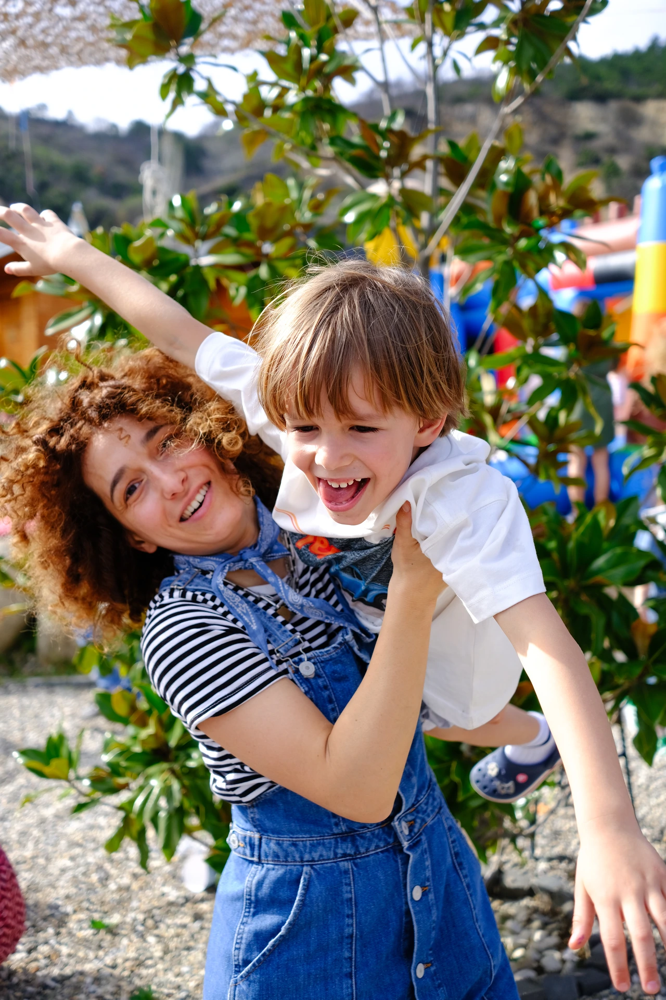
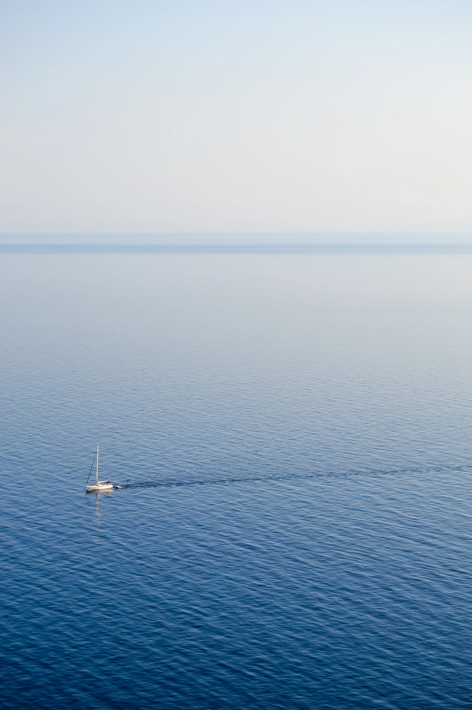

Selected photographs.
Browse collections
Featured collectionNature & children

About the photographer
Hello, I’m Lucija.
A social worker by profession and a photographer by vocation. I am fascinated by human expressions, body language, the psychology behind things, and the unique energy each person carries. I am naturally drawn to the subtle details, the unspoken emotions, and the seemingly ordinary moments that often go unnoticed.
Whether I am photographing a person, an object, a space, or the smallest detail in nature, I want to understand its essence, feel its presence, and only then capture it.
Projects

Market days
21 photographs
Childhood portraits
13 photographs
Landscapes & wildlife
18 photographs
On stage
4 photographs
Still life
6 photographs
European Youth Olympic Festival
13 photographsBologna
33 photographsNature & children
36 photographs
Ruen
26 photographs
Circularium
21 photographs